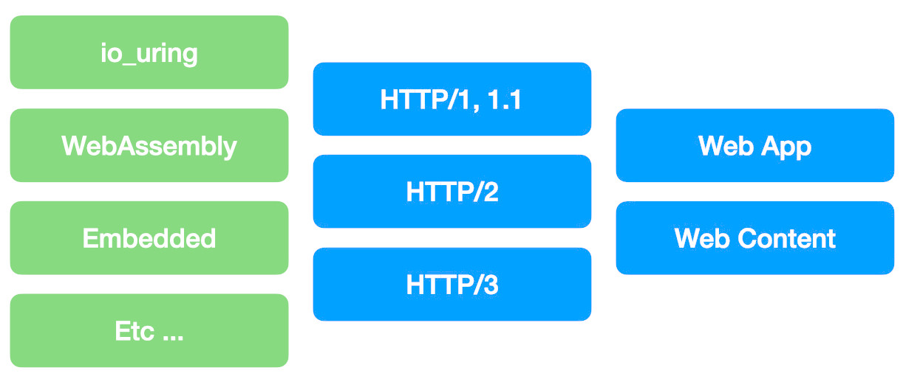
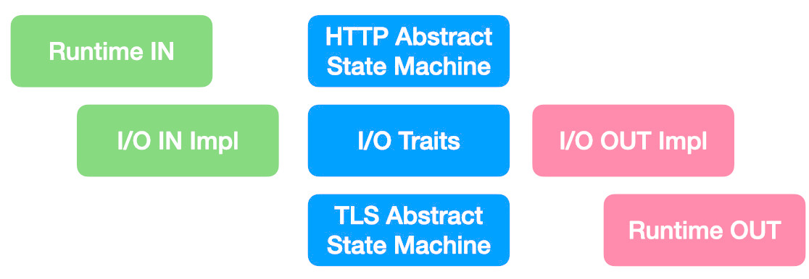

yaws
yaws is a harmonized environment-neutral open source HTTP server capability.
Traditionally Web Servers are monolithic in nature with the tight coupling of std/environment.
yaws de-couples the construct in a way that HTTP servers are environment-neutral in nature.

Architecture
yaws is driven through it's traits by providing implementation of Input and Output.

Flavors
YAWS calls it's environment / runtime integrations as flavors.
Given the aim of YAWS is to make it easier and have harmonious capability where only the runtime and I/O changes.
We provide them as examples given YAWS is aimed for multitude of uses in diverse varying environments with different needs.
YAOI
YAOI or Yet Another Output and Input is provided as an Linux io_uring example.
See full YAOI HTTPS example here.
More information about YAOI:
Embassy
See full Embassy HTTPS example here.
More information about Embassy:
More
If you would look forward to more runtime integrations or know one we haven't listed here.
Raise an issue at yaws/yaws repository about it.
Library Driver
User can also implement the I/O traits in conjuction with the abstract machines implementing HTTP.
Refer to the API documentation or see the existing reference runtimes or flavors for examples.
Validation
Each state machine (or blueprint / instantiated orbit) is validated.
Stata machinery consists of the below:
- TLS Blueprints at yaws/tls
- HTTP+App relevant Behavior at yaws/h11spec
Given yaws is organized around it's traits, we validate all the implementations through the trait implementations requiring no I/O.
Roadmap
Given the state machinery is isolated composable units we are be able to derive downstream stack test cases from upstream protocols.
i.e. HTTP requests can turn into TLS test cases when chained with TLS state machinery.
Performance testing can be done in isolated state machine units as well as in integrated composed form.
Security
Supported Versions
We, as the yaws maintainers, strive to support all previous versions of yaws unless declared End-of-Life.
Typically -1 major SemVer versions are to be supported at very least when stable.
Unstable versions prior to the stable major 1 are to be supported through -2 minor releases.
Reporting
Please contribute security related issues by [TBD] prior to any disclosure.
We ask that contributors give us maintainers a reasonable time to address any issues.
Maintainers will work collaboratively with any contributor/s in order to verify and fix any encountered issues.
Contributors are not required to write a PoC or a fix.
Nonetheless initially private contribution would be most welcome and helpful prior to disclosure if so.
Disclosure
We will publish and credit contributors relating to all the security issues through RustSec which feeds into various security databases independently.
Performance
yaws Performance testing consists of the below:
- Low/High load memory
- min+avg+max latency
- Protocol I/O less performance
- HTTP-TLS
- App based performance
Cryptography
yaws TLS uses either rustls >0.23 or yTLS behind the scenes.
Typically rustls would be used in most cases but in no_std + no_alloc you can use yTLS.
See more at yaws/tls.
Yaws Sans-I/O Overview
Yaws de-couples all the I/O from the rest of the state machine with the follwing set of traits with differing set of implementors.
The below traits are intended to be implemented by both the state machines & runtimes.
And the I/O traits are intended to be implemented by the runtimes handling I/O:
| Trait | Description |
|---|---|
| NoLeft & Left | "Left" side of the state machine/s |
| NoRight & Right | "Right" side of the state machine/s |
Yaws BluePrint
Yaws Blueprints represent the static blueprints of intended state machine configuration used to instantiate Orbits running the state machines.
Typically a runtime (such as yaoi) provides "injection point" to both instantiate and advance instances of chained up state machines forward with the I/O managed by the runtime.
A static collection of configured BluePrint is typically injected through runtime for each accepted or connected TCP Client.
Yaws blueprints are designed to be used in either std or no_std as well as alloc-optional environments.
Configuration
Each protocol or app take either default configuration or with_configuration upon instantiation into a running set of chained Orbit.
Yaws Orbit
Yaws Orbits are the instantiated state machines from set of blueprints typically run as "pipelines" with the given set of external I/O.
All Orbits are advanced using Left and Right traits.
Within each blueprint composition there must be at least one App layer with the intermediate Layers being optional.
Within the runtime, each runtime makes the decision/s on how to process all the intermediate layers as well as the terminating layers given each runtime is expected to have it's unique I/O characteristics.
Typically all the runtimes first processes the raw I/O all the way from Left to Right (as input) and then secondly provides the final summary (or reduced output) from all the chained state machines through back into the I/O layer, essentially advancing first from Left to Right for input and then from Right to Left for the final output.
Instantiation
A typical chain of Orbit might be instantiated as follows:
fn tls_server_blueprints() -> Result<Blueprints<1, Orbits>, ConfigurationError> {
let tls_config_server =
TlsServerConfig::with_certs_and_key_file(Path::new(CA), Path::new(CERT), Path::new(KEY))
.unwrap();
let server_context =
blueprint_tls::TlsContext::Server(TlsServer::with_config(tls_config_server).unwrap());
BlueprintsLayers::<1>::layers([Orbits::Tls(server_context)])
.app(Orbits::H11Server(H11SpecServer::with_defaults().unwrap()))
}
Which is typically then provided into the runtime upon instantiation of new clients e.g. in yaoi [upon TCP accept]
// uncomment for cleartext only pipeline
// let mut bp_listener: [Blueprints::<1, Orbits>; 2] = core::array::from_fn(|_| tls_server_blueprints());
let mut bp_listener: [Blueprints::<0, Orbits>; 2] = core::array::from_fn(|_| clear_server_blueprints());
// Setup Listener behaviour on_accept
listener
.accept_with_cb(&mut bp_listener, |ud, stream| {
let id = stream.fixed_fd().unwrap() as usize;
stream.run_blueprints(&mut ud[id-1]).unwrap();
})
.unwrap();
Layer
Each Layer, is designed to sit between the actual I/O and the terminating App is typically provided both the Left and Right implementations.
A good way of thinking both the Left and Right side in the context of TLS is that Left is intended for the "Ciphertext" side where as the Right is intended for the "Cleartext" side providing clear isolation from either through the processing.
Given all the Layers can be stacked (or nested) statically on each other they do not know about each other where the runtime is dedicated to passing both the I/O through to advance each of the Layer within the chained instantiated blueprints.
App
An App on the otherhand is designed to terminate the I/O processing pipeline as the last remaining "Layer" typically only interested of the Left side I/O.
Left of State Machines
The Left side of the state machines can be thought as the I/O originating side, produced by the runtime (responsible of managing I/O) and consumed by the state machine/s (responsible of processing the I/O provided by the runtime/s)
As an example in the TLS, we use the Left side as the "Ciphertext" side.
The trait and it's requirements is defined through the blueprint crate.
Requirements / Assumptions
The following requirements / assumptions are currently made as of v0.1.0:
| fn | Description | Assumptions |
|---|---|---|
| [set_]left_in_blocked | Is Left blocked ? | Right will not advance, see Blocking Left section below |
| left_set_lens | Set new lengths for Left buffers | Bounds are respected and checked by the state machines, see chapter Buffering |
| [set_]left_want_[read/write] | Does Left want to Read/Write ? | State machine sets and runtime provides traffic based on the state machine "wants" |
Blocking Left
Often it is desired to "block" the Left side in favor of processing only the Left side, e.g. in TLS negotiation before a layer can operate to transform the Cleartext (Right) traffic into Ciphertext (Left).
For example within the yaoi runtime we stop the Left-to-Right processing at the layer which is blocked to ensure we have completed all the necessary negotiating required before advancing the layers on top, e.g. in the case of TLS to generate Cleartext traffic on top to be transformed into Ciphertext saving memory pressure through the use of intermediary layers and processing in case of failed TLS handshake/s.
Blocking is different from "Readiness" that blocking can be set across the lifetime of the instanted orbit where as readiness is set only once.
Runtime (impl Producer)
The Left side is implemented in the runtime to provide the correct buffering for both the I/O and intermediary layers.
State Machine (impl Consumer)
State machine is provided an implementation of the instantiated Left side by the runtime.
Right of State Machines
The Right side of state machines can be thought as the I/O destination side, produced by the state machine/s and then consumed either by the other layers further through the chain or the final terminating App (for which it is typically then provided as it's Left side from the "below in the stack" Right side)
As an example in the TLS, we use the Left side as the "Cleartext" side.
Requirements / Assumptions
The following requirements / assumptions are currently made as of v0.1.0:
| fn | Description | Assumptions |
|---|---|---|
| wants_right_next_in | State machine wants Right input | Runtime should provide Right side traffic as desired |
Runtime (impl Producer)
Typically within the runtime the Right side is mirrored transparently as the Left side further Right in the blueprints.
Runtimes should manage to keep sufficient intermediary buffering capability as desired by it's users that is first used as the Right side that then gets passed as Left in next cycle.
State Machine (impl Consumer)
The isolation provides that state machines do not know anything about each other but the data is typically transformed forward through it's Right side, typically reflecting what the Left side was.
State machine can generate it's Right side without the Left side, e.g. in various testing scenarios or when replaying recorded I/O.
State Machines Overview
yaws Layers (or State machines) run statefully typically to transform Left side into Right side in a chain of state machines.
State machines don't know about each others existence and they can be processed as isolated stateful computation units independently and in parallel.
Given the design characteristics state machines should store as little stateful information as possible and process the traffic in streaming fashion.
Users typically instantiate running state machines as orbits through blueprints and then provide them to the runtime driver which advances all the chained state machines in the provided context.
Known Blueprints
Source: yaws-rs/blueprint/known
Given the blueprints have to be typically constructed using same type, we provide a static enum dispatch of all the known blueprints to avoid dynamistic indirection.
TLS
Source: yaws-rs/tls.
User typically provides the TLS Layer configuration through it's context within the provided blueprints to the runtime driver.
The Left side of the state machine is used as the Ciphertext and Right side is the Cleartext side.
The TLS state machine both handles the necessarily handshake and negotiation in the middle and then either encrypts the traffic from Right-to-Left or decrypts from Left-to-Right.
HTTP/1.1
Source: yaws-rs/h11spec
Currently the HTTP/1.1 is an "App Layer" provided as the terminating layer.
The HTTP state machine only takes the Left side and does not provide any transformation into the Right at the moment.
In the future the HTTP state machine will provide transformation where the Right side can implement application functionality over HTTP.
The application on top injected through the HTTP/1.1 state machine provides the instrumentation on how to respond to every request.
Application
Application layer is injected on top of the terminating protocol layer.
Currently we have application layer implementations over H11spec (HTTP/1.1)
HTTP/1.1 Application
The application typically implements the below traits found from h11types crate:
To receive a HTTP/1.1 Request:
- RequestReceiver to receive Metadata
- HeaderReceiver to receive Headers
- RequestBodyReceiver to receive Body
- TargetReceiver to receive Target URI
And to provide a response to the received request:
- ResponseSender to send a Response
Example HTTP/1.1 Applications:
Example applications are used in testing to ensure the expected behaviour of any given app is followed.